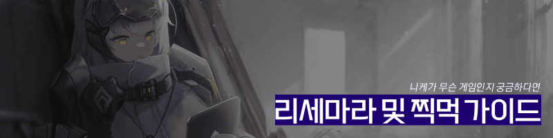

◆ 3.5주년 이후 리세 이륙 가이드
묵은지와 당일계에 대한 개인적인 추천 가이드 (비수기-여름 이벤트)
◆ 손리세 관련글
◆ 타오바오 계정 구매 관련글
※ 리세계 vs 손리세 차이가 큰 게임이라서 가볍게 구경해보는 것을 추천
진행계는 권장하지 않으며 관련한 질문글이나 구매 유도글이 올라오면
완장 재량에 따라 차단 및 삭제조치가 이루어질 수 있음.
◆ 계정 후속 조치
◆ 찍먹하기 전 참고사항
유입을 고려하신다면 읽어보시는 걸 추천드립니다.
Q. 뭐 데려가라고? (2026.04.20기준)
▶ 1옵션 크라운 2옵션 아니스: 스타
▶ 이외에 라피:레드후드, 세이렌, 스노우화이트:헤비암즈 등을 들고가면 좋음
Q. 이 겜의 장점?
▶ 스토리 풀더빙, 풀 Live 2D, 차별화된 장르
Q. 리세 꼭 해야됨?
▶ 이제는 스토리모드가 나와서 진짜 가볍게 즐길꺼면 안해도됨
찍먹만 한다면 걍 맨땅에 해보다가 관심있으면 리세하거나 리세계 사셈
절대 찍먹한 시간을 아까워 하지마셈 결국 시간이 답인 이 게임은 경험이 가장 중요함
다만 찍먹이 아니라 푹먹할꺼면 손리세든 구매든 권장
Q. 무.과금 가능?
▶ 할 수는 있는데, 160이라는 벽 때문에 초반에는 힘들수 있음...
160을 넘으면 그때부터 픽업 풀돌 욕심 없다는 가정하에 무.과금도 할만함
물론 아예 못하는건 아니며 비틱만 한다면 가능함 근데 이건 어떤 씹덕겜이든 통용된 상식이라고 생각
Q. 이 겜 혜자임?
▶ 명함 효율이 상당히 높기 때문에 보통 소과금 혜자겜이라 말하는 편이고
(대충 한 ~15만원 정도까지 소과금으로 보는편)
중과금부터는 과금이 엄청 매워져서 그때부턴 창렬겜
가챠 자체의 가격은 다소 비싸지만 그만큼 비틱하기 쉬워서 쌤쌤인듯
Q. 서브겜/분재겜 가능?
▶ 갤의 절반 이상이 분재로 키우는 만 26세 이상 직장인들임 걱정마셈
Q. 숙제 많음?
▶ 초반에는 20~30분, 어느정도 궤도에 오르면 10~15분이면 됨
레이드 같은 일정이 겹치는 경우 1시간 쯤 걸릴수도 있음
너무 바쁘면 일퀘보상 포기하고 하루에 1번씩 AFK 보상만 받아도 됨
▶ 니케는 어떤 게임인가요?
대부분의 경우 엉덩이 보는 겜으로 알고 있고 틀린 말은 아니지만
제작자가 "원핸드 건슈팅 장르"를 표방하고 있기 때문에
다른 씹덕 분재겜과는 달리 컨트롤 요소가 상당히 많음
※ Q. 여기서 건슈팅이란?
A. 오락실에서 보이는 2인용 총 쏘는 슈팅게임 알지? 그게 건슈팅임 (ex. 더 하우스 오브 더 데드))
물론 분재겜으로 게임을 하면 컨트롤 할 필요 없고 돈과 시간이 해결해주긴 하지만
분재겜이라기엔 컨트롤을 해야 할 컨텐츠가 좀 많고,
실력겜이라기엔 분재도 필수적으로 해줘야 하는 애매한 게임임
특히나 현질보다는 시간이 차지하는 비중이 엄~청 크기 때문에
결국 아무리 돈을 몇백만원 쳐발라도 성장을 하려면 시간을 들여야 함
그러니 이 게임은 하루만에 스토리 다 보는 게임이 아니라는 걸 꼭 알아야 한다
이 게임이 나온지 고작 1년밖에 안됐지만
소과금 기준으로 지금 시작해서 스토리 다 보려면 대략 반년쯤은 걸림
이걸 몰라서 몇백만원 꼴아박았는데 스토리 막혔다고 접는 뉴비가 많음
(2025.11) 이제는 스토리모드가 나와서 맘먹으면 일주일안에 스토리 전부볼수있음
특히나 이 게임은 중과금에 대한 상도덕이 없어서 매몰비용이 미쳤기 때문에
뉴비들이 생각없이 돈지르고 찍먹하는걸 조심해야 한다
하지만 태생이 분재겜이기 때문에, 대부분 유저들은 출퇴근길에 폰으로 숙제 해결하고
중요한 컨텐츠(ex. 레이드)를 할 때만 PC로 컨트롤 요소를 커버하거나 한다
또는 나처럼 폰으로 안하고 PC로만 게임하거나
그렇기 때문에
1) 씹덕겜에 신선함이 생겨서 재미를 느끼는 사람
2) 분재겜인데 귀찮음 요소만 생겨서 괜히 싫증나는 사람
두 가지 반응이 나타날 수 있어서 호불호가 좀 갈릴 것이고
이 때문에 게임의 첫인상은 사람마다 다를 수 있다
그러니 게임은 게임으로만, 너무 평가에 과몰입하지 마셈
▶ 게임의 장단점 (BM을 위주로)
씹덕겜의 장단점은 뭐 꼴리면 그만이고 아님 말고지만
중요한건 BM(과금구조)이니까 그것만 따지도록 하겠음
A. 장점인 부분
1. SSR 가챠확률이 4%, 픽업캐릭 가챠확률이 2%,
우정뽑도 SSR 2% 확률이라 다른 게임들보다 비틱이 쉬운편임
2. 픽업 가챠 마일리지가 영구히 이월된다 (즉, 천장이 평생 이월됨)
이게 바로 니케의 가장 큰 장점인데
다른 씹덕 가챠겜과 달리 좀 더 희망적인 가챠계획을 가질 수 있음
그래서 무.과금도 비틱만 하면 소과금 못지않게 할 수 있다 말하는거임
3. 명함 효율이 굉장히 좋음 (반대로 말하면 돌파 효율이 낮다?)
그래서 굳이 고돌파를 할 필요가 없음 그래서 소과금 친화적인거고
물론 돌파가 의미가 없다는건 아니지만 거의 대부분 컨텐츠를 명함만으로도 떡을 침
B. 단점인 부분
1. 모든 서버가 미래시가 없기 때문에 과금이 많이 힘들수 있음
당장 지금도 한정 연타를 엄청 당했기 때문에 사람들의 가챠 계획도 많이 무너졌음
심지어 원스토어 결제 할인, 구글 플레이포인트 이런것도 없기 때문에 더더욱....
이런 불안정한 과금계획을 싫어하다면 진지하게 고민을 해보셈
2. SSR 등급에도 좋은 애들만 있는 또 다른 등급이 있음 (=필그림/오버스펙)
이게 가챠겜에서 상당히 이례적인 일인데 같은 SSR 4% 확률이라도
3.5% 확률로 통상 SSR, 0.5% 확률로 필그림이라는 그룹의 SSR을 뽑을 수 있음
이거 때문에 돈을 아무리 쳐발라도 성능캐를 못 뽑을수 있고 그런 이유에서 갤에서 리세를 권장하는거임
3. "160"이라는 기상천외한 과금벽이 있음
캐릭터 161레벨 이상부터는 SSR 3돌파 5명이 있어야 레벨링을 더 할 수 있음
그래서 이를 160벽이라 하지만 160에 막혔다고 성장이 멈췄다는 의미는 아님
그 기간동안 장비, 코더, 모듈 등 평생 모자랄 성장재화를 파밍하면서 성장하면 됨
문제는 이걸 과금 없이는 버티려면 꼬접을 할 확률이 굉장히 높다.... 그래서 무.과금은 힘들다는거
각각 3가지의 장단점의 이유로
당신이 린저씨, 메정공같은 스타일이라면 갤에서는 좀 회의적이다 말할거임
실제로 니케갤은 연령대가 굉장히 높아서 다른 씹덕겜갤 생각하다간 깜짝 놀랄거다
여러분은 딱 씹덕겜을 씹덕겜처럼 즐길줄 아는 사람이었으면 좋겠음